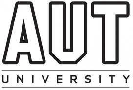
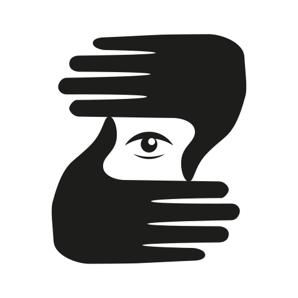
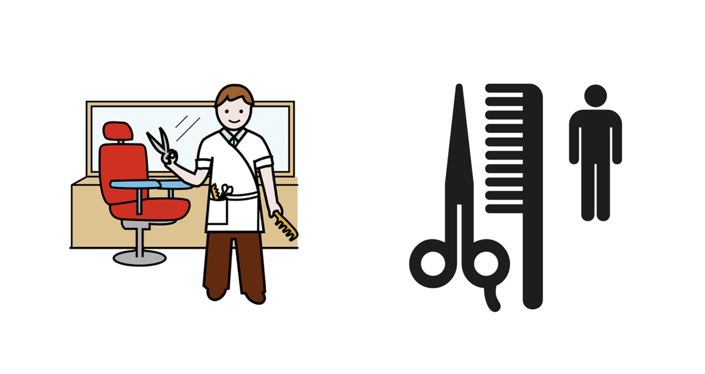
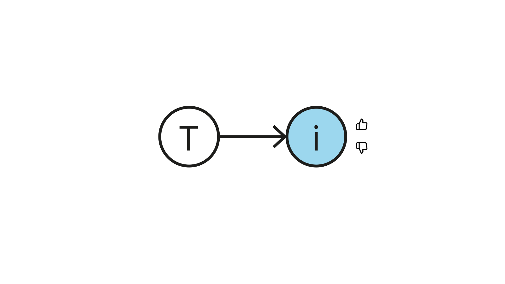
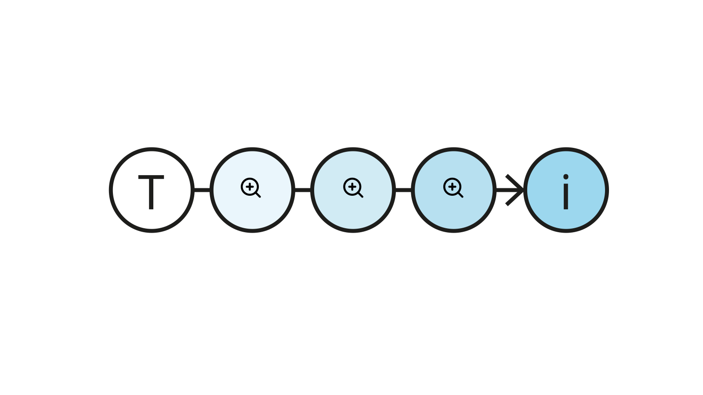
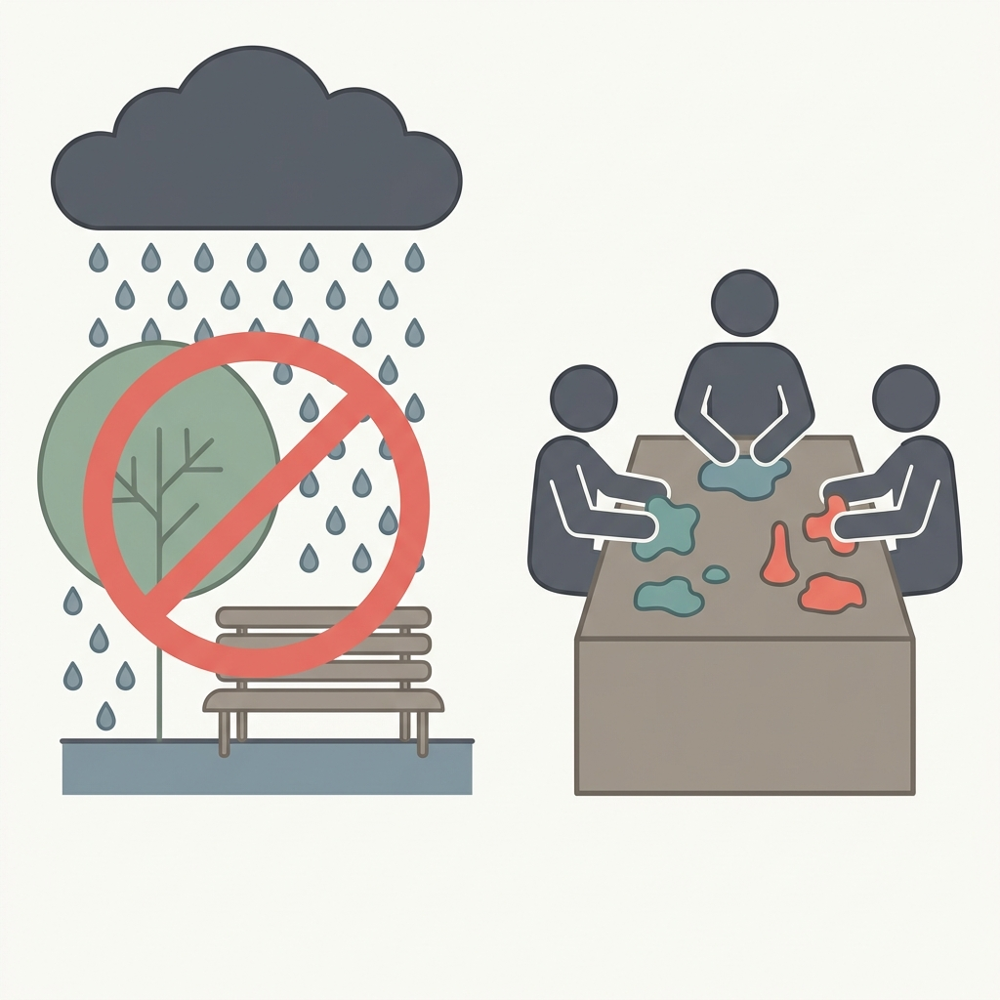
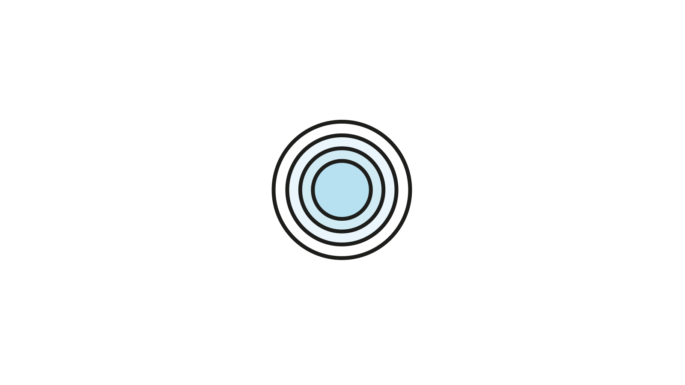

PICTOS.netDe la intención comunicativa al pictograma accesible


Núcleo de Investigación en Accesibilidad e Inclusión, PUCV · accesibilidad-inclusion.cl
enfoque de derechos · Ley 21.545 (2023)
La ley contiene dos visiones contrapuestas sobre el espectro autista
Por un lado, una perspectiva clínica que entiende el autismo como condición a tratar, centrada en detección e intervención temprana. Por otro, una perspectiva de neurodiversidad que promueve la aceptación, la igualdad de derechos y una sociedad más inclusiva.
Para quienes trabajan en CAA, esta tensión tiene consecuencias concretas: los apoyos visuales deben respetar la identidad, la edad y el contexto cultural de la persona, no infantilizarla.

Pictograma ARASAAC Peluquería (Sergio Palao / Gobierno de Aragón, CC BY-NC-SA 4.0). Utiliza una escena narrativa con detalle contextual y una figura infantil.
Pictograma de información pública AIGA/DOT Hairdresser Services (AIGA, 1974/2017, dominio público). Reduce el concepto a los objetos esenciales y una forma adulta neutra.

pictograma
/piktoˈɡɾama/ (sustantivo)
Del latín pictus 'pintado' + griego gramma 'algo escrito'; por analogía con ideograma.
Un pictograma es un signo visual predominantemente icónico cuya estructura composicional integra múltiples unidades gráficas reconocibles para expresar, en una sola configuración, estados de cosas, acciones o relaciones; en este sentido opera como una frase visual más que como una palabra visual aislada.
pregunta de investigación
¿Cómo diseñar una herramienta generativa que haga auditable y controlable la construcción de pictogramas CAA?
Una brecha persistente en CAA
Habla y lenguaje |
Sistemas predictivos |
Interfaces corporalizadas |
Representación pictográfica |
|---|---|---|---|
|
|
|
|

No se puede verificar la intención, ajustar la composición ni documentar decisiones.
pero nos quedaremos trabajando con plastilina

concepto central
Un punto de control es un lugar donde el sistema pausa, expone su estado intermedio y permite al profesional inspeccionar, modificar o aprobar
Cuatro propiedades: inspeccionabilidad, editabilidad, reanudabilidad y trazabilidad.
Pipeline — la comprensión precede a la visualización
| "porque hoy llueve, no iremos al parque" | ||||
| 1 Comprender |
2 Componer |
3 Producir |
4 Vectorizar |
Estructurar |
|---|---|---|---|---|
| NLU + NSM: acto de habla, marcos, roles, guías visuales. | Roles → símbolos. Jerarquía visual. Mezcla conceptual. | Bitmap 1024×1024 px: contexto semántico + estilo. | Bitmap → SVG via vtracer (WASM, local). | SVG semántico + metadatos accesibilidad (mf-svg-schema). |
Análisis semántico — fase COMPRENDER
{
"speech_act": "Explicación_y_Declaración",
"intent": "Explicar_cambio_de_plan",
"frames": [
{
"frame_name": "Causation",
"roles": {
"Cause": "hoy día llueve",
"Effect": "no iremos al parque"
}
},
{
"frame_name": "Performing_activity",
"roles": {
"Agent": "YO_Y_OTROS",
"Activity": "Trabajar_con_plastilina"
}
}
],
"visual_guidelines": {
"focus_actor": "YO_Y_OTROS",
"action_core": "NO_IR_A_LUGAR",
"context": "LLUVIA_EXTERIOR"
}
}


Texto como imagen: la estética de la accesibilidad

invitación
No se trata de reemplazar al profesional, sino de darle una herramienta que amplíe sus capacidades sin ocultar sus decisiones
trabajo futuro
Entrenar un modelo de razonamiento generativo que sea auditable y personalizable
Una nueva forma de aprendizaje federado, soberana y justa
Gracias

PICTOS: pipeline transparente texto → SVG para pictogramas accesibles. Código abierto, evaluación integrada, gobernanza comunitaria.
- pictos-net — motor generativo
- ICAP — evaluación de pictogramas · demo
- mf-svg-schema — esquema SVG accesible
- nlu-schema — esquema NLU
- manifiesto — principios de diseño · es
Herbert Spencer González · hspencer@ead.cl